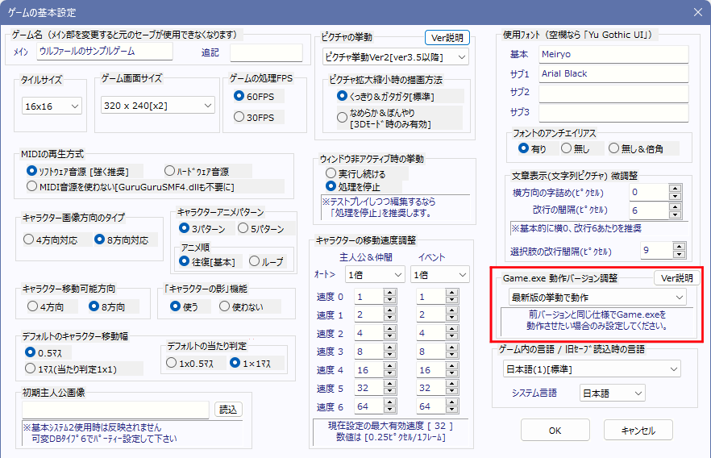

【Game.exe 動作バージョン調整】
ここでは「ゲーム基本設定」画面内にある「Game.exe 動作バージョン調整」で設定できるバージョン別の機能変化について記載しています。
もしWOLF RPGエディターをアップデートした際などに期待通りに動作しなくなった場合は、「Game.exe 動作バージョン調整」で適切な動作バージョンに変更してください。

【Game.exe 動作バージョン調整】
ここを切り替えることで、おおよそ旧バージョンの（バグがあったときの）仕様でGame.exeを動作させることができます。
最新版を導入して表示が狂ってしまったときや、挙動が変わってしまった場合などに変更してみてください。
「最新版の挙動で動作」 … 最新版の挙動で動作します。
「現Ver3.588の仕様で動作(2025-04)」 … 最新の挙動です。
「現Ver3.566の仕様で動作(2025-03)」 … この↑の全てに加え、以下の挙動で動作します。
●最新版にしてキャラの「ピクセル補正」と「動作指定」を組み合わせて使った際の挙動が変わった場合にお試しください。
・【Ver3.566版 エフェクト・動作指定】
「座標指定」のコマンド、「の座標に一歩接近」「自動移動（各種）」「の座標にジャンプ」を行っても、「ピクセル補正」のズレが維持され続けるようになります。また、ピクセル移動と自動移動を併用すると特定位置を往復し続ける挙動をするバグが起きます。
→ Ver3.588以降にすると「座標指定」のコマンド、「の座標に一歩接近」「自動移動（各種）」を行った際、半歩でも移動した方向（縦か横）の「ピクセル補正」が0になります。また、「の座標にジャンプ」をした場合は必ずマスの区切り内に移動します。
※ これはつまり【完全に縦に移動する場合は横方向のピクセル補正が維持されます】が、【縦や横に1歩でも動くとその方向のピクセル補正は0に戻される】ということです。
「旧Ver3.50の仕様で動作(2025-01)」 … この↑の全てに加え、以下の挙動で動作します。
●最新版にして「DB操作」の「データ名」を「名前」呼出しているところで「タイプ XX には以下のデータ名は存在しません」エラーが出るようになった場合にこのバージョンをお試しください。
●最新版にしてロード時のイベントの「すり抜け」状態などが従来と違っている場合にこのバージョンをお試しください。
●最新版にして文字列操作の文章の変換状況が従来と違っている場合にこのバージョンをお試しください。
●最新版にして自由変形のピクチャの表示がおかしくなった場合にこのバージョンをお試しください。
・【Ver3.50版 特殊文字】
- DB操作で、「可変DB」の「データ名」を「名前」呼出する際、「ゲーム起動時点のデータ名」のみを使って処理が行われるようになります。
→ Ver3.566以降にすると「可変DB」の「データ名」の「名前」呼出が「最新のデータ名」に合わせて処理されます(つまり「ゲーム中」のデータ名の変化にも対応します。これにより、従来は読めていた名前指定が正常に読めなくなる可能性があります)
・【Ver3.50版 イベントのオプション設定】
- ゲームをロードした際、起動条件が設定されたイベントの「当たり判定■」「方向固定」「すり抜け」「前面表示」「半歩/全歩移動」「影番号」設定が、「エフェクト」や「動作指定」で変更した設定でなく「そのイベントページ側の設定」に戻ってしまうことがあります。
→ Ver3.566以降にするとセーブ時の各状態が正しくロードされます。
・【Ver3.50版 文字列操作】
- 本来なら変換されない特殊文字「\\self[0]」(\が2つあるので変換されない)などが「↓から特殊文字を消去して格納」すると変換されるようになります。
→ Ver3.566以降にすると上記の例で変換されずに「\self[0]」のまま表示されます。
・【Ver3.50版 ピクチャ】 「自由変形」のピクチャを「0フレーム」で「消去」して同じIDで通常ピクチャ表示を行うと、自由変形のサイズが引き継がれるようになります。
→ Ver3.566以降にすると上の手順では自由変形のサイズが引き継がれず、何もない状態からの「表示」と同じになります。
「旧Ver3.390の仕様で動作(2024-08)」 … この↑の全てに加え、以下の挙動で動作します。
●Ver3.50大規模アップデート前の最後のバージョンです。3.50にして様々な挙動が変わった場合にこのバージョンをお試しください。
・【Ver3.390版 特殊文字】
- 特殊文字の\sp[?]、\i[?]、\img[?]で一時止まってしまうようになります。
→ Ver3.50以降にするとほぼ普通の1～2文字分と同じ速度で表示されます。
- 【Ver3.390版 選択肢】ゲーム基本設定の「横方向の字詰め」や、特殊文字の\-[?]で字詰めされたとき、選択肢のカーソル幅が文字幅より小さくなります。
→ Ver3.50以降では、字詰めがあっても選択肢のカーソルがそれらしい幅で表示されます。
・【Ver3.390版 DB操作】
- 「DB操作」において、格納する先と読込先の「数値」と「文字列」の型が違う場合はエラーが出るようになります。
→ Ver3.50以降にすると「DB操作」で数値と文字列の変換が柔軟に行われます。
- 「(タイプ･データ･項目の)番号の取得」で、「存在しない名前」を指定したらエラーが出た後、0が返されるようになります。
→ Ver3.50以降ではエラー表示なしに「-1」が返されます（存在しない名前をチェックすることが可能に）。
・【Ver3.390版 変数操作+】
- 0フレームで「消去」した同じフレーム中でも「変数操作+」でピクチャ情報を取得できるようになります。
→ Ver3.50以降にするとピクチャを処理時間0で消した場合、直後から変数操作+でピクチャ情報を取得できなくなります。
- 「変数操作+」の「その他」の「ﾏｳｽ座標のEvID」でマップズームが考慮されなくなります。
→ Ver3.50以降ではマップズームも考慮したイベントIDを返します。
- 「変数操作+」の「その他」の「ﾏｳｽ座標のEvID(範囲拡張版も)」で、「一時消去」されたイベントでもIDを返します。
→ Ver3.50以降では一時消去されたマップイベントなら-1を返します。
- 「通行可能（タイル・Ev両方）」を 「0.5×1当たり判定」のイベントに対して使うと「足下」でなく 「頭側」にしか当たり判定が発生しません。
→ Ver3.50以降では、0.5×1当たり判定のイベントは「足下」のみに当たり判定が発生します。
- ある文字列ピクチャを表示したあとに同IDで「空白の文字列ピクチャ」を「表示」すると、変数操作+で得られる画像サイズが0にならず、「直前の文字列ピクチャのサイズ」がそのまま引き継がれるようになります。
→ Ver3.50以降では、空白文字列を表示した場合は必ずサイズ0が返されます。
・【Ver3.390版 ピクチャ】「スクロールリンク」したピクチャが一定数のループをすると期待通りの位置に表示されなくなるバグ修正
→ Ver3.50以降ではいくらループしても表示されるようになります
・【Ver3.390版 エフェクト】
- 「エフェクト」の「キャラチップ変更」コマンドで本体画像を消した際、見た目は全て消えますが別レイヤー分が内部的に残ります。
→ Ver3.50以降で本体画像を消すと全レイヤーが消去されます。
- 「キャラ」に「強制ピクチャパターン上書き」しても、「変数操作+」で得られる「現在ピクチャパターン」値が変わるまで1フレームかかるようになります
→ Ver3.50以降では「強制ピクチャパターン上書き」したのと同じフレーム中に「変数操作+」で得られる「現在ピクチャパターン」が変更されます。
- 「キャラ」の「キャラチップ変更」で元タイルチップのイベント画像が変更できなくなります。
→ Ver3.50以降では元タイルチップが設定されたマップイベントの画像も変更できるようになります。
・【Ver3.390版 動作指定】
- イベントが「EvID？のイベントに接近」と「～の座標に一歩接近」で接触していても「イベント接触」イベントが起きなくなります。
→ Ver3.50以降では、イベントが「EvID？のイベントに接近」と「～の座標に一歩接近」で 主人公に触れた場合に「イベント接触」イベントが起きるように修正
- 主人公を「並列実行イベント」で動作指定の移動をさせてイベントに接触させた場合でも「プレイヤーから接触」のイベントが起動しません。
→ Ver3.50以降では並列の動作指定移動では「プレイヤーからの接触」イベントが起動するようになります。
・【Ver3.390版 システム変数】
- 320×240画面サイズで「Sys6:ﾎﾟｰｽﾞｶｰｿﾙY」に大きな値を入れるとポーズカーソルが画面外に出るようになります。
→ Ver3.50以降ではSys6をどんなに大きくしても画面内にポーズカーソルが配置されます。
・【Ver3.390版 イベント起動】
- (0,0)座標に「イベントと接触」Evを配置すると、主人公の座標にかかわらず起動後やロード時に一度起動してしまうようになります。
→ Ver3.50以降では(0,0)座標の「イベントと接触」イベントは勝手に起動しなくなります。
- 「予約」イベントと「決定キー/接触」イベントが同時起動したときに起動状態がスタックされ、片方の終了後にもう片方が起動するようになります。
→ Ver3.50以降では「予約」イベントが起動したフレーム中、その他のイベントは同時起動しなくなります。
・【Ver3.390版 セーブロード処理】
マップイベントとの会話中にセーブしてロードすると、そのキャラがセーブ時点の向きのままになります（通常の会話後のように戻りません）
→ Ver3.50以降では、ロード後にマップイベントが会話前の元の向きに戻るようになります。
- 【Ver3.390版 影番号】マップイベントの影番号がロード時に復元されなくなります。
→ Ver3.50以降ではロードした際、セーブ時点の影番号が復元されます。
「旧Ver3.353の仕様で動作(2024-07)」 … Ver3.390と同じです。
「旧Ver3.340の仕様で動作(2024-06)」 … この↑の全てに加え、以下の挙動で動作します。
●最新版にして、マップイベントを移動させた時に（元々はアニメしなかったのに）急にアニメーションするようになってしまった場合にこのバージョンをお試しください。
・【Ver3.340版 マップイベント】変数呼び出し値9100000～の値を変えてマップイベントのX・Y座標を直接変えてイベントを移動させたとき、
特定条件で「移動時アニメ」が行われなくなります。
→ Ver3.353以降にすると、上記の処理時に移動時アニメが確実に行われるようになります。
「旧Ver3.310の仕様で動作(2024-04)」 … この↑の全てに加え、以下の挙動で動作します。
●最新版にして、ウィンドウ非アクティブ時「処理を停止」の場合のプレイ時間が増えなくなったのが困る場合にこのバージョンをお試しください。
・【Ver3.310版 システム変数】「ウィンドウ非アクティブ時の挙動」が「処理を停止」のとき、
「Sys29:プレイ時間（1秒単位）」と「Sys30:[読]プレイ時間(ﾐﾘ秒単位)」が
非アクティブ時でも増加するようになります。
→ Ver3.340以降にすると、「ウィンドウ非アクティブ時の挙動」が「処理を停止」なら非アクティブ時にプレイ時間は増えません。
「旧Ver3.300の仕様で動作(2024-03)」 … この↑の全てに加え、以下の挙動で動作します。
●最新版にして、エフェクト→キャラの「ピクセル移動」が期待通りに動作しなくなった場合や、「トランジション準備」中の待ち時間が前より長くなってしまった場合にこのバージョンをお試しください。
・【Ver3.300版 エフェクト→ピクセル移動】ピクセル移動が以下の挙動になります。
- 「4方向画像」を使った場合、ピクセル移動させても「向き変更しない」「アニメーションしない」ようになります。
- 「T.png画像やTX.png画像」を使った場合、「アニメーションしない」ようになります。
→ Ver3.310以降にすると、画像の種類にかかわらず「ピクセル移動時に向き変更する・アニメーションする」になります。
・【Ver3.300版 トランジション準備】「トランジション準備」中の「ウェイト」の待ち時間がほぼなくなります。
→ Ver3.310以降であればウェイトが正常に作用します。
「旧Ver3.270の仕様で動作(2023-11)」 … この↑の全てに加え、以下の挙動で動作します。
●最新版にして、これまで維持できていたピクチャエフェクトが想定外の場所で消えてしまうようになった場合にこのバージョンをお試しください。
・【Ver3.270版 ピクチャ】 「エフェクト」→「ピクチャ」をかけたピクチャに対し、
「0フレーム消去」をおこなったフレーム中に同じIDでピクチャを「表示」し直すと、
さっき消去されたピクチャのエフェクトが次に表示されたピクチャにも引き継ぎされるようになります。
Ver3.300以降であれば、「0フレーム消去」が実行された時点でそのIDの全ピクチャエフェクトがリセットされます。
「旧Ver3.250の仕様で動作(2023-11)」 … この↑の全てに加え、以下の挙動で動作します。
●最新版にして、「接触範囲拡張」した「プレイヤー接触」起動イベントの起動回数が半減してしまう箇所が発生した場合にこのバージョンをお試しください。
・【Ver3.250版 マップイベント】 「通行不能」な(または×タイル上にある)「プレイヤー接触」イベントの
「接触範囲拡張」内で【1歩あるくたびに2回ずつイベント起動】するようになります。
Ver3.270以降であれば、その条件でも「プレイヤー接触」イベントは【1歩あたり1回】しか起動しません。
「旧Ver3.233の仕様で動作(2023-10)」 … この↑の全てに加え、以下の挙動で動作します。
●最新版にして、「動作指定」内での変数操作を含んだ挙動が狂ってしまった場合にこのバージョンをお試しください。
・【Ver3.233版 動作指定】 動作指定内で「変数の代入」や「変数の加算」をおこなっても、
「同じ動作指定中」は変更された変数が反映されません。
Ver3.250以降であれば、「動作指定内で変更した変数」も「同じ動作指定内」で変化が反映されます。
「旧Ver3.21の仕様で動作(2023-08)」 … この↑の全てに加え、以下の挙動で動作します。
●最新版にして、マップイベントの「ページ数」周りや「イベントの一時消去」での動作が狂ってしまった場合にこのバージョンをお試しください。
・【3.21版 イベントの一時消去】 マップEvの「ページ」が切り替わったフレーム中に
「イベントの一時消去」をしても消去されなくなります。
・【3.21版 イベントの挿入】「ページ」に変数値を指定したとき、
変数指定に-1され(1100001と入れると1100000(ｾﾙﾌ変数0)が読まれる)、
ページ数が+1されるようになります。
・【3.21版 イベントの挿入】 マップイベントに対しページ数を「0」（現在のページ）にしてイベントを
呼び出したとき、もし「別ページの起動条件」を満たしたのがそのフレーム中ならば、
「ページが変わる前のページの処理」が呼び出されます。
（つまり変数の値が変わっても、1フレーム経つまで呼び出されるページが変わりません）
Ver3.233以降では、変数値を変えてページ処理を呼び出すと常に条件に合ったページ処理が読み込まれます。
※これら3つは、Ver3.233以降で修正されたバグです。
「旧Ver3.19の仕様で動作(2023-05)」 … この↑の全てに加え、以下の挙動で動作します。
●最新版にして、「変数操作+」で得られる「一時消去」済みマップイベントの「ページ数」のパラメータ値が-1になって動作が狂う場合にこのバージョンをお試しください。
・【3.19版 変数操作+】マップイベントを「一時消去」した後に
「変数操作+」のキャラ情報を取得した場合、
「ページ数」「起動条件」が消去前の値をそのまま返します。
Ver3.232以降であれば、「一時消去」したイベントは「ページ数」「起動条件」として「-1」を返すようになります。
(なおVer3.21～3.231の間だけは「イベントID」以外の全キャラ情報として「-1」を返すようになっていましたが、
不便だったのでVer3.232以後はほぼ全てのキャラ情報が「消去前の値を返す」形に戻されました）
「旧Ver3.18の仕様で動作(2023-05)」 … この↑の全てに加え、以下の挙動で動作します。
●最新版にして、可変データベースの「データ数」の処理が期待と違う値になってしまった場合にこのバージョンをお試しください。
・【3.18版 可変DB】元のデータ数より大きい番号のデータを内容を読み込もうとしただけでデータ数が増えます。
たとえばデータ数10個のCDBタイプ0に対し、「\cdb[0:25:0]」を文章表示しただけでデータ数が26個に増えます。
Ver3.19以降であれば、このような読み込み方をしても可変DBのデータ数は増えません。
「旧Ver3.17の仕様で動作(2023-03)」 … この↑の全てに加え、以下の挙動で動作します。
●最新版にして「変数操作+」の「最も上にあるﾀｲﾙのﾀｸﾞ番号」の値が元からずれてしまった場合にこのバージョンをお試しください。
・【3.17版 変数操作+】 「最も上にあるﾀｲﾙのﾀｸﾞ番号」を「精密座標」で取得したとき、
少しずれた座標でタグが取得されます。
「旧Ver3.155の仕様で動作(2023-02)」 … この↑の全てに加え、以下の挙動で動作します。
●コモンイベント内で「場所移動」させた際のマップセルフ変数の挙動、ならびにページ切り替わり時のキャラの方向が期待通りでなくなった場合にこのバージョンをお試しください。
・【3.155版 マップセルフ変数】 「コモンイベント処理内」で「場所移動」した後も、そのイベントの処理中ならば
「マップセルフ変数」が「移動前」のマップから読み込まれます。
Ver3.170以降では、「コモンイベント処理内」で「場所移動」すると
その「場所移動」コマンド以後のマップセルフ変数は「移動先」のマップから読み込まれます。
・【3.155版 マップイベントのページ切り替わり】(Ver3.175～で追加)
マップイベントのページが変わっても、状況次第でキャラクターの方向が変わらなくなります。
Ver3.170以降では、ページが切り替わると確実にキャラは新ページの方向・パターンに切り替わります。
「旧Ver3.123の仕様で動作(2022-12)」 … この↑の全てに加え、以下の挙動で動作します。
●最新版にして「文章の表示」の表示待ちウェイトがおかしくなった場合にこのバージョンをお試しください。
・【3.123版 システム変数】「Sys10：ﾒｯｾｰｼﾞ表示ｳｪｲﾄ(X ﾌﾚｰﾑ)」が「フレーム終了時の値」を使ってウェイトします。
Ver3.156以降では、Sys10は「文章の表示」が実行された瞬間の値でウェイトします。
「旧Ver3.06の仕様で動作(2022-11)」 … この↑の全てに加え、以下の挙動で動作します。
●最新版にして自由変形ピクチャがおかしくなった場合にこのバージョンをお試しください。
・【3.06版 ピクチャ】 「自由変形」で「表示」したとき、内部的に「角度」と「拡大率」だけ
「同値」として処理されるようになります。
Ver3.123以降では「自由変形」の「表示」時、「角度0/拡大率100」扱いで処理されます。
「旧Ver3.00の仕様で動作(2022-11)」 … この↑の全てに加え、以下の挙動で動作します。
●最新版にして、(おそらくマップ上の物体として配置した)一部ピクチャの色が予想外に暗くなった場合にお試しください。
●キャラ動作指定のパターン変更のタイミングがずれてしまった場合にお試しください。
・【3.00版 エフェクト】 エフェクトの「色調変更」でRGB値を99以下にしたとき、
「ピクチャ番号がマイナスのピクチャ」に対してのみ色が変わらなくなります(100以上は通常通り反映されます）。
Ver3.06以降ではマイナスのピクチャに対してRGB99以下でも数値通りに色が反映されます。
・【3.00版 キャラ動作指定】
「キャラ動作指定」で「パターン1～5」を実行しても、反映まで15フレームほど遅れるようになります。
Ver3.06以降では指定したパターンが即座に反映されます。
「旧Ver2.29の仕様で動作(2022-08)」 … この↑の全てに加え、以下の特徴で動作します。
●Ver3の大規模修正が入る前の最後のバージョンです。すでにVer2台で作っていた場合にお試しください。
・【2.29版 システム変数】
- Ver2.29挙動では「Sys26～27：選択肢ウィンドウ余白X/Y」が無効になり、-999のみ返されます。
また、選択肢ウィンドウの余白が「チップサイズに応じて自動で設定」されます。
Ver3.00以降ではSys26、27で手動で選択肢ウィンドウの余白を設定できます。
・【2.29版 文字列操作】
- キーボード入力時の文字入力数が「入力された値の1.5倍」に調整されます。
UTF-8文字コードになった都合上、「全角1文字で3バイト分」になるケースがあるためです(従来は1文字2バイトだった)。
・【2.29版 ピクチャ】
- Ver2.29挙動では「通常ピクチャ」の「角度」を0以外にすると強制的に「縦横同じ拡大率」になります。
- Ver2.29挙動では「文字列ピクチャ」の「角度」が反映されなくなります。Ver3.00以降では文字列ピクチャの角度が反映されます。
・【2.29版 変数操作+】
- Ver2.29挙動ではオートタイルが0-15番までと想定した場合のチップ番号を返すようになります（基本タイルが16番から）。Ver3.00以降では0-31番と想定します（基本タイルが32番から）。
- Ver2.29挙動ではイベントが存在していないときの「キャラ」の「起動条件」が0を返します。Ver3.00以降では-1を返します。
- Ver2.29挙動では「主人公の画面座標」で取得したプレイヤー画面座標が1フレーム分だけずれてしまいます（つまり、得た座標にピクチャを重ねてもぴったりの位置に表示されません）。Ver3.00以降では、取得したプレイヤー画面座標がぴったりの位置になります。
・【2.29版 チップ処理】
- Ver2.29挙動ではオートタイルが0-15番までと想定されてチップ番号が処理されます。
・【2.29版 文章の表示・文字列ピクチャ】
- Ver2.29挙動ではルビの特殊文字\r[XX,YY]の全体が文字速度にかかわらず一瞬で表示されてしまいます。
Ver3.00以降ではXX部分が文字速度に応じて1文字ずつ表示されます。
・【2.29版 イベント制御】
- Ver2.29挙動では「キャラ動作指定」において、指定された「変数」として「その各動作を実行する瞬間」のものが使用されます（たとえば「ジャンプ」の右・下に「3」が入ったセルフ変数1を指定しても、ジャンプ前にセルフ変数が「0」になっていれば移動量「0」のジャンプしか行いません）。
Ver3.00以降では「動作指定開始時点」の変数の値が使用されます。
「旧Ver2.27の仕様で動作(2022-07)」 … この↑の全てに加え、以下の特徴で動作します。
・【2.27版 選択肢コマンド】 タイルサイズが「40x40」のとき、「選択肢」コマンドで出てくる選択肢ウィンドウの上下幅が不均等になります（上の空きが大きく、下の空きが小さい）。
最新版ではウィンドウの上下幅が均等になっています。
「旧Ver2.10以前の仕様で動作(2013-08)」 … この↑の全てに加え、以下の特徴で動作します。
・ 【2.10版 文字表示】 今のフォントサイズより大きなアイコンを使い、「\i[??]\ay[0]～～」 とY座標0に文字を出そうとした場合に
「～～」部分の文章のY座標が0になりません。最新版は同じ入れ方でも「～～」部分のY座標が0になります。
・ 【2.10版 文字表示】 Ver2.10以前では最大フォントサイズが100ピクセル前後以下になります。
・ 【2.10版 音量】 Ver2.10以前ではBGM音量の補正を下げても音量が小さくなりにくくなります、0％付近にしてもかなり音が鳴ります。
最新版は、数値に合わせた感じの音量の下がり方になります。
・ 【2.10版 動作指定】 Ver2.10以前では「主人公から離れる」を行った場合、4方向移動しかしなくなります。
最新版は、8方向移動で主人公から離れるようになります。
「旧Ver2.02以前の仕様で動作(2012-06)」 … ここから↑の全てに加え、以下の特徴で動作します。
・ 【2.02版 特殊文字】 Ver2.02以前では特殊文字\m[X]が、320x240時のみ縦中央揃えになる（最新は下揃え）。
・ 【2.02版 変数操作+】 Ver2.02以前ではタグ取得時の内部座標が最新版よりY方向に1マス上にずれている。
・ 【2.02版 文章・文字列ピクチャ】 Ver2.02以前では文頭に何も文字がない状態での改行が無効になる（最新版は改行を反映する）